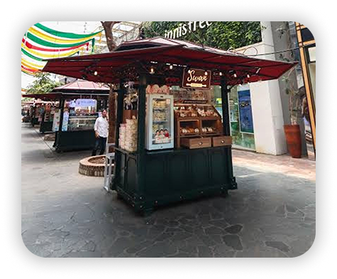

PROFIL
Swan Pantry adalah merek kuliner asal Bandung yang dikenal dengan produk makanan siap saji bergaya rumahan, mengusung cita rasa khas Sunda yang autentik. Didirikan saat masa pandemi dan mulai membuka toko offline setelah masa pandemi berakhir. Swan Pantry berkomitmen menyajikan makanan lezat tanpa bahan pengawet, dengan kualitas dan rasa yang konsisten. Swan Pantry adalah UMKM yang bergerak dibidang oleh – oleh makanan rumahan dan makanan siap saji, mereka menyajikan makanan siap saji dan oleh – oleh yaitu gepuk seperti gepuk ayam dan gepuk sapi dan masih banyak lagi
